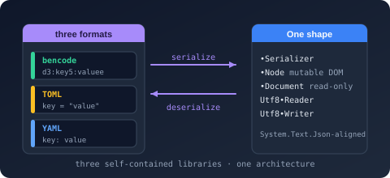

Bodu serializers (Bencode, TOML, and YAML)

Bodu.Text.Bencode, Bodu.Text.Toml, and Bodu.Text.Yaml are three libraries that map your own types (POCOs, records, collections) to and from a document format. Part of the Text & Serialization topic, each ships its own reader, writer, DOMs, and converters, and each references the shared Bodu.Text.Serialization package (namespace Bodu.Text.Serialization) for the vocabulary they have in common — the attribute family ([PropertyName], [Ignore], [Converter], [Required], [Constructor], [ExtensionData], …), the naming policies, the ignore / creation / unmapped-member enums, and the serialization callback interfaces. The per-format packages also compile the shared metadata resolver and converter engine from that package's source under their own format symbol:
| Package | Namespace | Format | Entry point |
|---|---|---|---|
| Bodu.Text.Bencode | Bodu.Text.Bencode | Bencode (BEP 3) (binary) | BencodeSerializer |
| Bodu.Text.Toml | Bodu.Text.Toml | TOML v1.0.0 / v1.1.0 (text) | TomlSerializer |
| Bodu.Text.Yaml | Bodu.Text.Yaml | YAML 1.2 core schema (text) | YamlSerializer |
The libraries are built to the same architecture: the same three-tier layering, the same System.Text.Json-aligned vocabulary, and the same naming so that what you learn for one transfers to the next. They are not identical surfaces — Bencode and TOML are member-for-member twins, while YAML tunes its serializer surface to the format (more on this below) — but the mental model is shared across all three.
The three members
This page is the family parent: it describes the architecture the libraries share. What is specific to each format lives on its own introduction:
| Library | Introduction | In one line |
|---|---|---|
| Bodu.Text.Bencode | Bodu.Text.Bencode | The binary BEP 3 format — byte strings as first-class values, canonical dictionary ordering, and the converter bridge for the kinds Bencode cannot represent. |
| Bodu.Text.Toml | Bodu.Text.Toml | The human-readable configuration format — a rich native value model (floats, Booleans, RFC 3339 date-times), spec-version selection (v1.0.0 / v1.1.0), and positional parse diagnostics. |
| Bodu.Text.Yaml | Bodu.Text.Yaml | The indentation-structured format — block and flow collections, quoted and block scalars, anchors and aliases, multi-document streams, and the 1.2 core schema (opt-in 1.1 typing). |
Each library's introduction is backed by its own core concepts and getting-started pages, linked at the foot of this page.
Core mental model
Each library layers three surfaces over one format:
| Tier | Bodu.Text.Bencode | Bodu.Text.Toml | Bodu.Text.Yaml |
|---|---|---|---|
| Serializer (POCO ↔ format) | BencodeSerializer | TomlSerializer | YamlSerializer |
| Mutable DOM | BencodeNode | TomlNode | YamlNode |
| Read-only DOM | BencodeDocument | TomlDocument | YamlDocument |
| Low-level reader / writer | Utf8BencodeReader / Utf8BencodeWriter | Utf8TomlReader / Utf8TomlWriter | Utf8YamlReader / Utf8YamlWriter |
Reach for the serializer for object mapping, a DOM to inspect or edit a document without a model, and the Utf8…Reader / Utf8…Writer pair for forward-only token processing. The serializer is built on the reader/writer pair; a custom converter receives them directly.
Choosing a format
| Reach for… | When you want… |
|---|---|
| TOML | A configuration file a human will edit, with typed scalars and tables and exact parse positions. |
| YAML | An indentation-structured document — multi-document streams, anchors and aliases, or interop with an existing YAML toolchain. |
| Bencode | A compact, deterministic binary envelope — .torrent metadata, content-addressed payloads, byte strings as first-class values. |
Surface differences at a glance
The architecture is shared, but the serializer surfaces differ where the format warrants it:
- Bencode and TOML expose the full
System.Text.Json-style surface — converters and converter factories, the complete attribute family, serialization callbacks, naming policies, and the string/number enum converters. - YAML keeps the serializer, both DOMs, the reader/writer pair, and the shared attribute/naming/callback layer, shaping members exactly like its siblings. It adds YAML-specific richness on top — anchors and aliases, block and flow collections, block scalars, opt-in 1.1 merge keys, and multi-document streams.
Each library's own pages document its exact surface.
Shared behaviours
Three contracts hold identically across all three libraries, so they are worth learning once:
- Options are frozen on first use. A
…SerializerOptionsinstance is mutable only until the first serialize or deserialize call binds it; after that it is read-only and further mutation throws. Configure an options object fully, then reuse the same frozen instance across calls — it caches per-type metadata, so a shared instance is both correct and faster than a fresh one per call. - Two exception types, two failure stages. Malformed input — bytes or text that do not parse — raises a
…FormatException(BencodeFormatException, TomlFormatException, YamlFormatException). Input that parses but cannot bind to your type raises a…SerializationException(BencodeSerializationException, TomlSerializationException, YamlSerializationException). The text formats carry line / column / offset on the format exception; catch the two separately when you need to distinguish a syntactically broken document from a schema mismatch. - UTF-8 is the native encoding. Every
Utf8…Reader/Utf8…Writeroperates on UTF-8 bytes, and the serializers acceptReadOnlySpan<byte>and write toIBufferWriter<byte>without a string detour.
Note
All three serializers ship the same stream facade: Serialize<T>(IBufferWriter<byte>, …), SerializeAsync(Stream, …), Deserialize<T>(Stream, …), and DeserializeAsync<T>(Stream, …). The stream overloads buffer the whole document in memory — only the stream copy itself is asynchronous — so they are conveniences over the span / string entry points rather than incremental parsers.
Common scenarios
| You want to… | Use |
|---|---|
| Map a config record to and from TOML | TomlSerializer.Serialize / Deserialize<T> |
| Round-trip an object through YAML | YamlSerializer.Serialize / Deserialize<T> |
| Encode a torrent-style object to Bencode bytes | BencodeSerializer.Serialize / Deserialize<T> |
| Rename members on the wire | the shared [PropertyName] attribute or a naming policy |
| Control how a tricky type is written | a …Converter<T>, attached with the shared [Converter] attribute or registered on the options |
| Edit a document in place without a model | the mutable …Node DOM |
| Inspect a document with minimal allocation | the read-only …Document / …Element DOM |
| Process tokens by hand | the Utf8…Reader / Utf8…Writer pair |
Where to go next
- Member introductions — Bodu.Text.Bencode, Bodu.Text.Toml, and Bodu.Text.Yaml for what is specific to each format, each with its own core concepts and getting-started pages.
- Guides — the serializer guides hub, with a full set of recipes per library.
- Text & Serialization topic — how the serializers sit alongside
Bodu.Text.EncodingandBodu.Text.Formats.